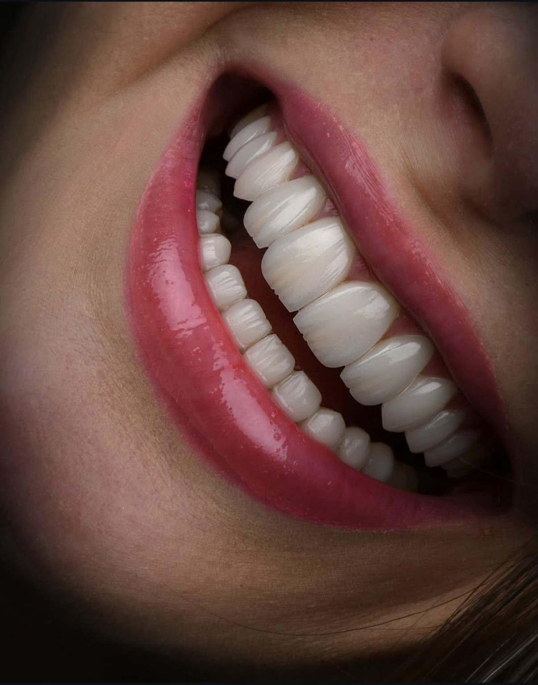
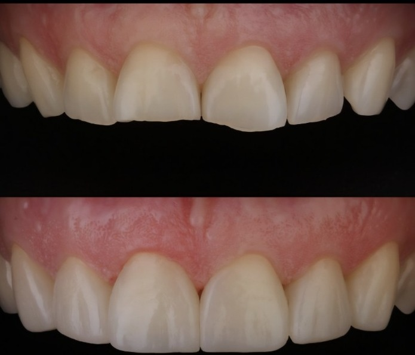
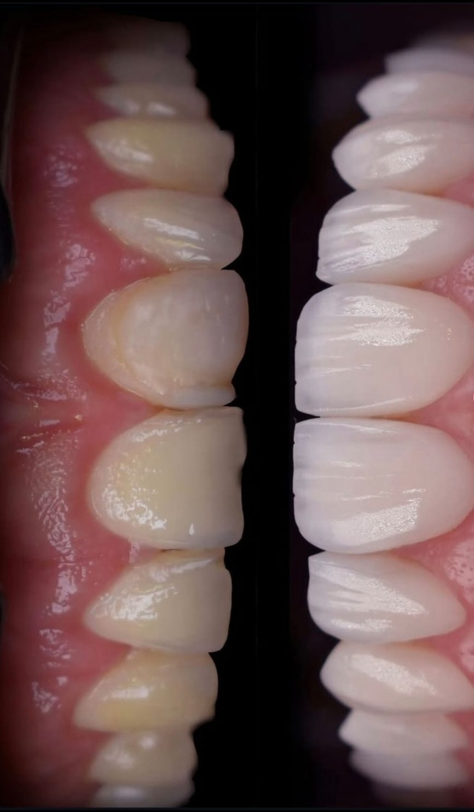

Ästhetische Zahnmedizin, die natürlich aussieht
Injectable Flow Technique, Veneers und keramischer Zahnersatz in München Trudering.
Natürlich schön – und passend zu Ihnen
Ästhetische Zahnmedizin bedeutet für uns nicht, jedem Menschen das gleiche perfekte Lächeln zu geben. Zahnform, Farbe, Proportionen, Gesicht und Persönlichkeit müssen miteinander harmonieren.
Mit modernen, möglichst substanzschonenden Verfahren können wir kleine oder größere Veränderungen gezielt planen – immer mit dem Ziel eines Ergebnisses, das hochwertig und vor allem natürlich wirkt.

Hauchdünne Veränderung, große Wirkung
Hauchdünne keramische Verblendschalen können Form, Farbe und Proportionen der Frontzähne harmonisch verändern. Dabei legen wir besonderen Wert auf eine individuelle Planung, natürliche Ästhetik und einen möglichst schonenden Umgang mit Ihrer Zahnsubstanz.
Substanzschonende Korrektur ohne Keramik
Nicht jede ästhetische Veränderung benötigt Keramik. Mit der Injectable-Composite-Technik können wir in geeigneten Fällen Zahnformen mit hochwertigem Komposit gezielt korrigieren oder ergänzen – häufig besonders substanzschonend.


Nicht das perfekteste Lächeln. Sondern das Lächeln, das zu Ihnen passt.
Das könnte Sie auch interessieren
Bereit für den nächsten Schritt?
Vereinbaren Sie Ihren Termin bei EDEL SMILE in München Trudering.
Termin vereinbaren